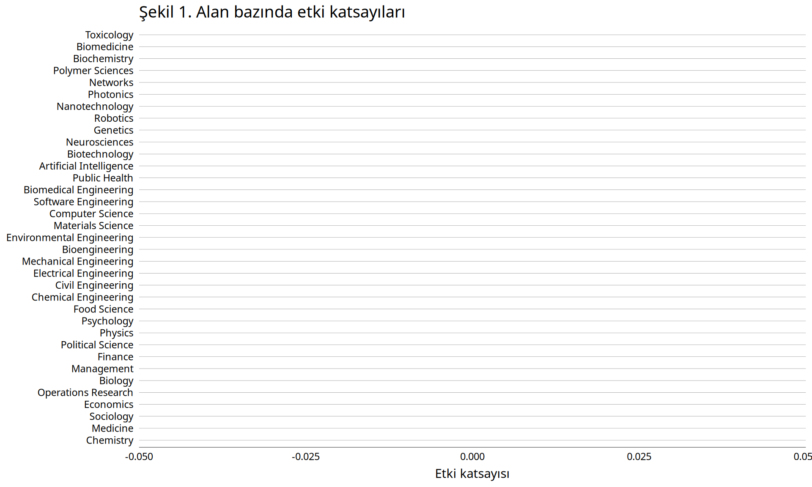
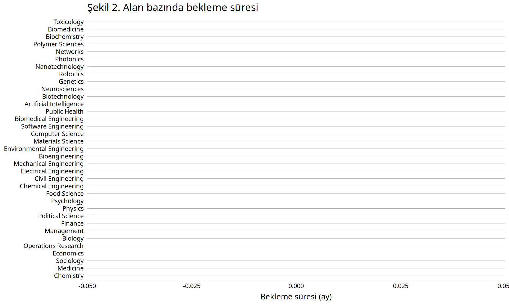
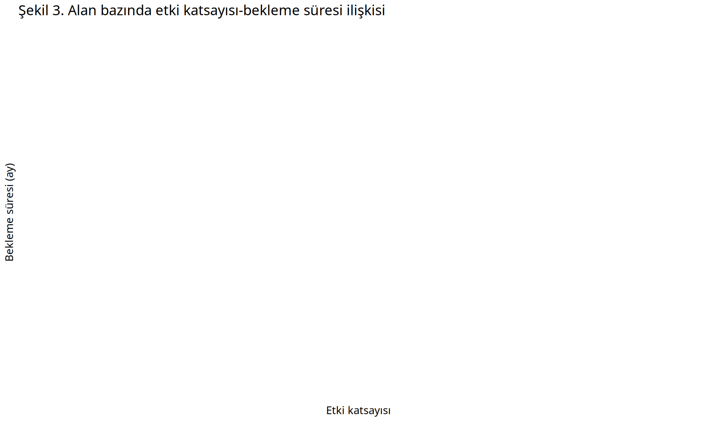
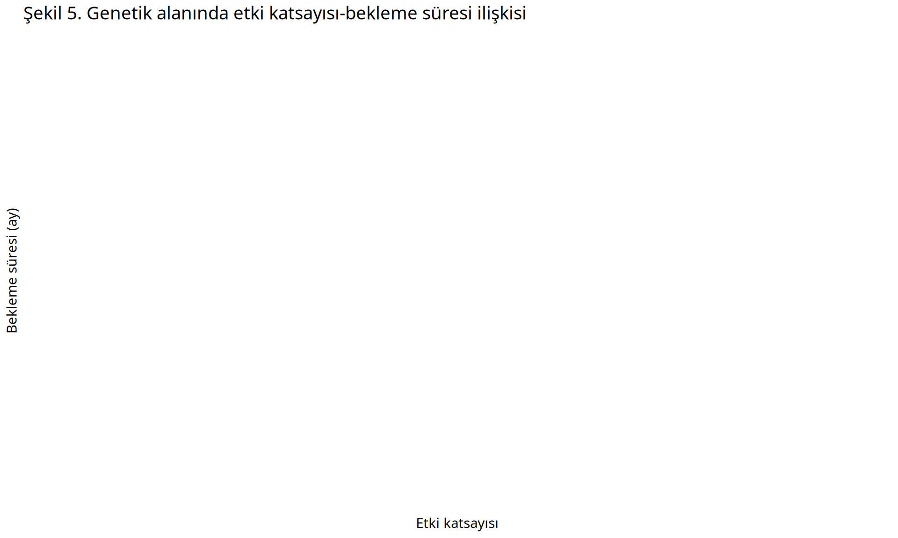

Bilimsel Yayınlar ve “Performans” Ölçütleri
İçindekiler
Bilim topluluğu ve bilimsel yayınlar
Bir toplumsal pratik olarak bilimsel faaliyetlerin kapsamı ve metodolojisi, bu faaliyeti yürütenler tarafından, “bilim insanları” topluluğu tarafından tanımlanıyor. Bu nedenle bilimsel çalışmaların bilimselliği de yine bilim insanları tarafından, “akran değerlendirmesi” (peer review) ile kontrol ediliyor. Akran değerlendirmesi, bilimsel proje başvurularının değerlendirmesinden, çalışmaların yayımlanmasına kadar pek çok konuda yaygın olarak kullanılıyor. Akran değerlendirmesinin önemli rolünden dolayı her bilim insanının bu sürece gönüllü olarak (ve çoğu kez bir maddi beklenti içerisinde olmadan) katılması ve katkıda bulunması bekleniyor.
Bilim insanlarından beklenen bir başka önemli uygulama da, çalışmalarında kendilerinin geliştirmediği bilginin kaynağına referans vermeleri. Bilimsel faaliyetlerin sonuçları kamu oyuna açık olarak sunuluyor (“scientfic commons”) fakat bu bilgiyi kullanan bilim insanlarının bilgiyi geliştiren kişiye/kişilere referans vermesi de bilimsel etik açısından zorunlu görülüyor.
Akran değerlendirmesi ve bilgi kaynağına referans verilmesi uygulamalarının bilimsel faaliyetler açısından önemi yadsınamaz. Fakat bu uygulamalar, temel amaçları dışında, bilimsel performans değerlendirmesi için de kullanılmaya başlandı. Yayın sayısı ve yayınların ne kadar atıf aldığı gibi ölçütler artık bilimsel çalışmaların nicelik ve niteliğinin ölçülmesinde, “objektiflik” adına yaygın biçimde kullanılıyor.
Yayın ve atıf sayılarının bilimsel performans ölçütü olarak kullanılmasında iki önemli sorun var. İlk sorun, farklı bilimsel alanlardaki uygulamaların farklı olması. İkinci ve daha büyük sorun da, bu ölçütlerin teşvik mekanizmalarında kullanılması sonucu bilimsel faaliyetlerde farklı kaygıların göz önüne alınması.
Alan bazında etki katsayıları ve bekleme süreleri
Etki katsayısı (impact factor), genellikle bir yayının belirli bir sürede aldığı atıf sayısı ile ölçülüyor. Burada temel varsayım, bilimsel niteliği ve/veya etkisi yüksek olan yayınların daha fazla atıf alacağı. Farklı alanlardaki bilimsel toplulukların pratiklerindeki farklardan dolayı atıf verme davranışlarında alan bazında önemli farklar bulunuyor. Bu nedenle atıf katsayısını hesaplayan kuruluşlar, yayın değerlendirmelerini genellikle “alan” bazında yapıyorlar. Bilimsel faaliyetlerdeki uzmanlaşma sonucu tanımlanan bu alanların da aslında fazla genel kaldığı ve bu nedenle alan farklılıklarını yeteri kadar yansıtamadığı söylenebilir.
Bilimsel faaliyetler açısından atıf sayısı kadar önemli bir başka faktör de, çalışmaların yayımlanma süresi. Bilimsel dergilerde kullanılan akran değerlendirmesi, çalışmaların yayımlanmasını geciktiren en önemli etkenlerden biri. Bilimsel dergilerde kabul oranı ve değerlendirme süreleri önemli farklılıklar gösteriyor. Bu nedenle hangi derginin bir makaleyi ortalama kaç ayda değerlendirdiği, çok yayın yapma baskısı altındaki bilim insanları açısından önem kazanıyor.
Springer yayınevi etki katsayılarına ek olarak dergilerin ortalama ilk karar süresi (başvurudan ilk kararın verilmesine kadar geçen süre) ve ortalama kabul süresi (başvurudan yayıma kabule kadar geçen süre) istatistiklerini yayımlıyor. Bu verileri derleyerek farklı bilimsel alanlarda bekleme sürelerini karşılaştıracağız. (Dergilerin kabul oranları da göz önüne alınması gereken bir başka önemli faktör, fakat bu konuda incelenen tüm dergiler için toplu veri bulunmuyor.)
Şekil 1’de farklı bilimsel alanlardaki etki katsayıları görülüyor. Bu şekilde mavi çubuklar, ilgili alanda yer alan dergilerin ortanca (median) etki katsayısını gösteriyor. Sarı noktalar ise, sırasıyla, %25 ve %75’lik dilimdeki dergilerin etki katsayıları. (Bu şekildeki alanları Springer yayınevinin kullandığı alan tanımlarından anahtar kelimeler kullanılarak oluşturduk. Bu nedenle şekildeki alan tanımları ile Springer’in alan tanımları aynı olmadığı gibi şekilde tüm alanlar da kapsanmıyor.)

Bekleneceği ve bilindiği gibi etki katsayıları alanlar arasında önemli farklılıklar gösteriyor. Örneğin toksikoloji alanındaki dergilerin etki katsayısı finans alanındaki dergilerin etki katsayısından yaklaşık 2.5 kat daha fazla. Daha doğru bir ifade ile söylemek gerekirse, son yıllarda toksikoloji alanındaki dergilerde yayımlanan makaleler, finans alanındaki dergilerde yayımlanan makalelerden 2.5 kat daha fazla atıf alıyorlar.
Şekil 2’de ise aynı alanlar için, başvurudan kabule kadar geçen süre verileri yer alıyor. Alan bazında dergilerin yayın değerlendirme süreçlerinde de önemli farklılıklar var. Örneğin yöneylem araştırmaları, finans, iktisat ve işletme gibi alanlarda “kabul”e kadar geçen süre yaklaşık 10 ay iken, toksikoloji, tıp, nanoteknoloji gibi alanlarda bu süre 3-4 aya kadar düşüyor.
Şekil 2’de iki sarı nokta arasındaki fark, alan içi dergiler arasındaki farklılığı gösteriyor. Örneğin, toksikoloji alanındaki dergilerin %50’sinde ortalama bekleme süresi 2.8-4.1 ay arasında. Yazılım mühendisliğinde ise dergilerin %50’sinde kabul yazısını görmek için 6.2-12.2 ay arasında beklemek gerekiyor. Bir başka deyişle, toksikoloji alanında dergiler arasında bekleme süresi çok farklı değil, fakat yazılım mühendisliğinde değerlendirme süreci dergiden dergiye büyük farklılık gösterebiliyor.

Bekleme süresi - etki katsayısı ilişkisi
Etki katsayısı ve bekleme süresi yayın performansı açısından önemli iki etken. Bu iki etken arasında alan bazında bir ilişki var mı?
Şekil 3’de alan bazında bu ilişki görülüyor (yatay eksendeki değişken ilgili alandaki dergilerin ortanca etki katsayısı, düşey eksendeki değişken de ortanca bekleme süresi; mavi noktalar alanları, sarı çizgi de iki değişken arasındaki doğrusal ilişkiyi gösteriyor). Şekilde açıkca görüldüğü gibi bu iki değişken arasında negatif (ve istatistiksel olarak %5 düzeyinde anlamlı) bir ilişki var: etki katsayısı yüksek olan alanlarda bekleme süresi daha kısa. Bu durum, yayın performansı değerlendirilirken sadece alanlar arasındaki etki katsayısı farkının değil, bekleme süresinindeki farklılığın da göz önüne alınması gerektiğini gösteriyor. İki değişken arasındaki ilişkinin negatif olması bu farklılığı daha da önemli hale getiriyor çünkü etki katsayısı açısından “avantajlı” durumda olan alanlar, bekleme süresi açısından da avantajlı durumdalar.

Alan bazında etki katsayısı ve bekleme süresi arasındaki negatif ilişki, bir alan içindeki dergiler arasında da gözleniyor mu? Örnek olarak, Şekil 4 iktisat alanındaki dergiler için bu iki değişken arasındaki ilişkiyi gösteriyor. İki değişken arasındaki ilişki negatif (sarı çizginin eğimi), fakat bu ilişki istatistiksel olarak %5 düzeyinde anlamlı değil. Burada ele alınan 35 alan için bu ilişkiye bakıldığında, alanların çoğunda ilişkinin istatistiksel olarak anlamlı olmadığı, sadece 8 alanda (biyoloji, bio-mühendislik, bio-medikal mühendislik, bio-kimya, bio-tıp, genetik, tıp ve nanoteknoloji) negatif ve istatistiksel olarak %5 düzeyinde anlamlı olduğu bulundu (biyoloji örneği için bkz Şekil 5). Tıp-biyoloji alanlarında etki katsayısı yüksek olan dergiler, makale değerlendirme sürecini de daha hızlı tamamlıyorlar, fakat diğer alanlar için böyle bir ilişkiden bahsedemiyoruz.


Sonuç olarak, alanlar arasında yayın ve atıf sayısını belirleyen farklılıklar göz önüne alınmadan kurulacak “teşvik” mekanizmaları, bazı bilimsel alanlarda teşvik yerine engele dönüşebiliyor. Alan bazında tanımlanan ölçütler bu sorunu hafifletebiliyor fakat alanların sınırlarının tanımlanmasındaki zorluklar ve etkenlerin çeşitliliğinden dolayı sorunu tamamen çözmek mümkün değil.
Nerede yayınlamalı?
Ekti katsayısı ve bekleme süresine ilişkin verilere baktıktan sonra, yukarıda bahsettiğimiz ikinci sorunu ele alabiliriz: yayın sayısı ve etki katsayısının teşvik mekanizmalarında kullanılması sonucu bilimsel faaliyetlerde farklı kaygıların göz önüne alınması. Bu ve benzeri sayısal ölçütlerin teşvik mekanizmalarında kullanılması doğal olarak bilim insanlarının davranışında da bir değişikliğe yol açıyor, çünkü bilim insanları hızlı ve çok sayıda makaleyi tercihan etki katsayısı yüksek olan dergilerde yayımlamaya zorlanıyor. Bu zaten söz konusu teşvik mekanizmalarını geliştirenlerin istediği sonuç.
Bilim insanları çalışmalarının sonuçlarını yayımlayacakları zaman artık öncelikle “derginin etki katsayısı nedir”, “kabul oranı nedir”, “değerlendirme süreci ne kadar çabuk yapılıyor” gibi soruların cevaplarını arıyorlar. “Akademik değerlendirme” içerikten bağımsız parmak hesabına dönüşüyor.
Daha önemlisi, çoğu ticari kuruluşlar tarafından yayımlanan “akademik” dergiler de bu koşullara adapte oluyorlar. Etki katsayılarının artan önemi, dergileri ve yazarları bilimsel etik kaygılarının dışında atıf vermeye yönlendiriyor. Bekleme süresine ilişkin verilerin yaygınlaşması sonucu değerlendirme sürecinin (akran değerlendirmesinin) hızlandırılmasına yönelik bazı “yaratıcı” çözümlerin geliştirileceği açık.
“Çakma dergi” (predatory journal) diye bilenen dergiler bu sürecin uç örneği, fakat “saygın” bilimsel dergiler de bu süreçten olumsuz etkileniyorlar, bilimsel faaliyetlerin en önemli özelliği olan öz-değerlendirme süreci (akran değerlendirmesi) giderek anlamsızlaşıyor. Bilim insanlarının kendilerine dayatılan ve bilimsel faaliyetleri giderek körelten bu sürecin önüne geçmesi mümkün. Bunun için, “açık bilim” uygulamalarını yaygınlaştırmak, (dijital teknolojilerin katkısıyla) akran değerlendirmesini daha büyük ölçekte yapmak ve kamusal bilime (scientific commons) sahip çıkmak yeterli. Bir başka deyişle, bilimsel çalışmaları bilime ve bilimsel pratiğe saygı duyan açık bilim ortamlarında yayımlamak gerekli.
Ek 1. İktisat alanındaki yayınlar
(İstenilen değişkene göre tabloyu sıralamak için sütun başlığındaki aşağı veya yukarı okları tıklayınız.)
Ek 2: R kodu
10 Ocak 2020’de Springer web sitesinden yayın verilerini çekmek için kullanılan R kodu
# Springer publication info
# 10 January 2020
# Load libraries
library(rvest)
library(RCurl)
library(data.table)
# Base url
jURL <- "https://link.springer.com/journals/"
# Function to get the lists of journals
addjList <- function(pl) {
jList <- html_text(html_nodes(pl, "li.c-atoz-list__item"))
jList <- gsub("\n", "", jList)
jList <- trimws(jList)
return(jList)
}
# Function to get journal links
addjLink <- function(pl) {
jLink <- html_attr(html_nodes(pl, "a.c-atoz-list__link"), "href")
return(jLink)
}
# Function to get journal topics
addjTopics <- function(ur) {
ur <- sub("/volumesAndIssues", "", ur)
pl <- read_html(ur)
top <- html_nodes(pl, "ul.abstract-about-subject")
top <- trimws(gsub("\n", "", html_text(top)))
top <- gsub("\\s\\s+", " - ", top)
return(top)
}
# Data objects
allList <- NULL
allLink <- NULL
allTopics <- NULL
# Get the journal info
for (i in c(1:length(letters))) {
cat("Now processing ", letters[i], "\n")
pl <- read_html(paste0(jURL, letters[i], "/1"))
allList <- c(allList, addjList(pl))
allLink <- c(allLink, addjLink(pl))
pn <- html_text(html_nodes(pl, "li.c-pagination-listed__item"))
pnli <- unlist(regmatches(pn, gregexpr("[[:digit:]]+", pn)))
pnm <- 1
if (!is.null(pnli)) pnm <- max(as.numeric(pnli))
if (pnm > 1) {
for (j in c(2:pnm)) {
pl <- read_html(paste0(jURL, letters[i], "/", j))
allList <- c(allList, addjList(pl))
allLink <- c(allLink, addjLink(pl))
}
}
}
# Prepare the data table
journalData <- data.table(name = allList, link = allLink, num = NA, impact = NA,
impact5 = NA, first = NA, accept = NA)
# Journal number
journalData[, num := as.numeric(unlist(regmatches(link, gregexpr("[[:digit:]]+", link))))]
# Base url for metrics
bURL <- "https://www.springer.com/journal/"
# Get metrics
for (i in c(1:nrow(journalData))) {
cat("Journal ", i, "\n")
jurl <- paste0(bURL, journalData$num[i])
if (url.exists(jurl) == FALSE) next
pl <- read_html(jurl)
metrics <- html_nodes(pl, "dd.app-journal-metrics__details")
if (length(metrics) > 0) {
cmetrics <- as.character(metrics)
nf <- grep("metrics-speed-value", cmetrics)
na <- grep("metrics-acceptance-time-value", cmetrics)
ni <- grep("\"impact-factor-value\"", cmetrics)
ni5 <- grep("five-year-impact-factor-value", cmetrics)
if(length(ni) > 0) journalData$impact[i] <- as.numeric(strsplit(html_text(metrics[ni]), " ")[[1]][[1]])
if(length(ni5) > 0) journalData$impact5[i] <- as.numeric(strsplit(html_text(metrics[ni5]), " ")[[1]][[1]])
if(length(nf) > 0) journalData$first[i] <- as.numeric(strsplit(html_text(metrics[nf]), " ")[[1]][[1]])
if(length(na) > 0) journalData$accept[i] <- as.numeric(strsplit(html_text(metrics[na]), " ")[[1]][[1]])
}
}
# Get topics
for (i in c(1:nrow(journalData))) {
cat(i, "\n")
allTopics <- c(allTopics, addjTopics(journalData$link[i]))
}
journalData$topics <- allTopics
save(journalData, file = "Data/springerJournalData.Rdata")